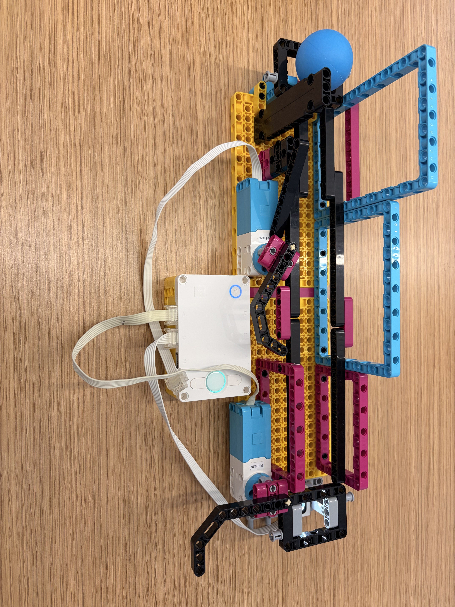
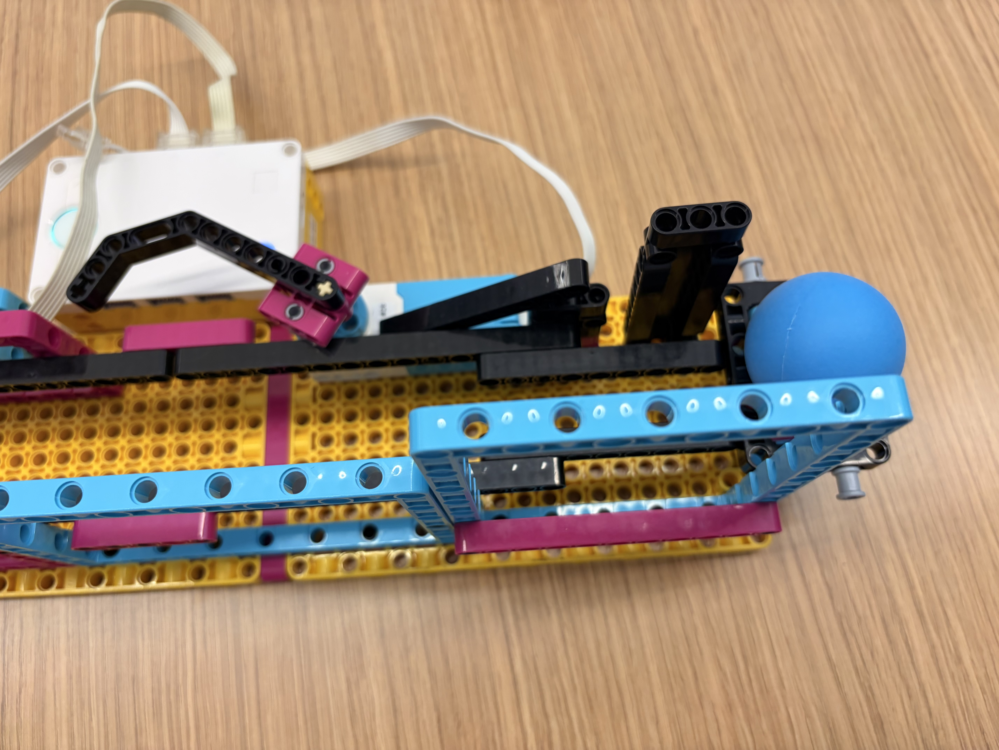
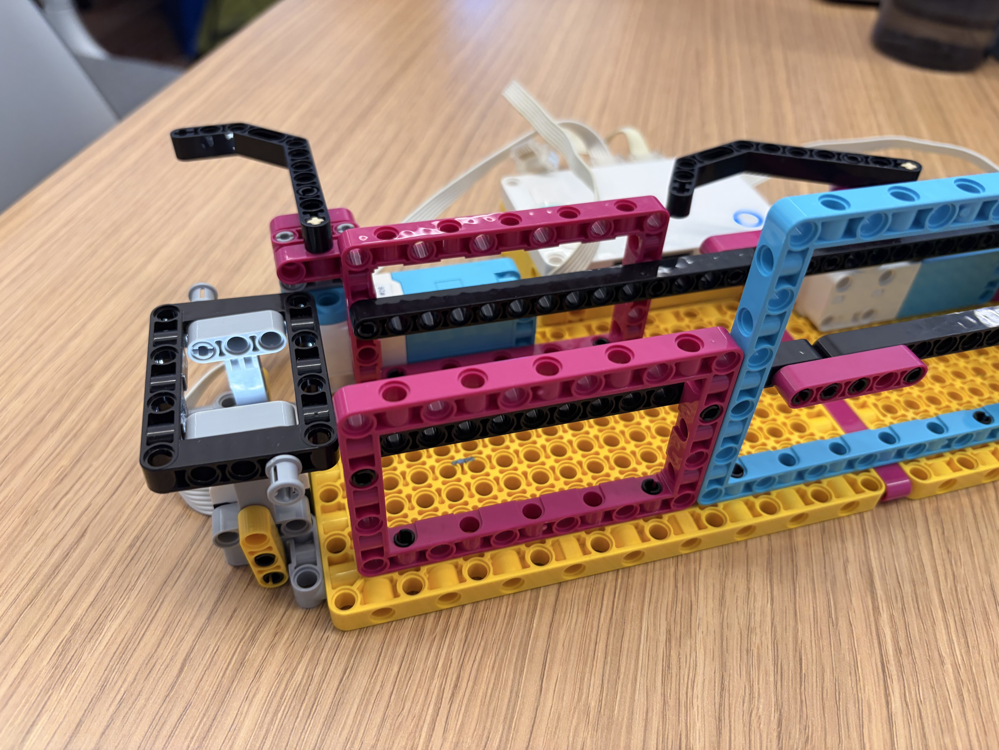
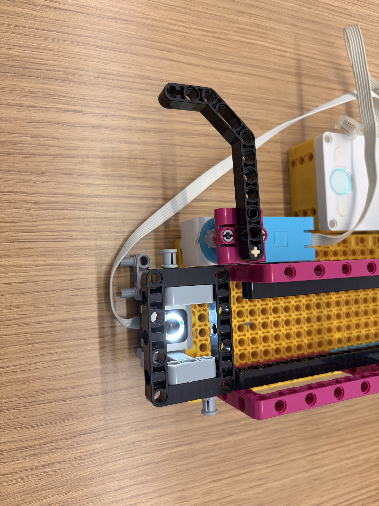

In this project, we built a robotic arm that can bring a ball from one side of the platform to the other.
The platform connects to another platform, so together they become a conveyor belt that can transfer balls from anywhere to anywhere.


